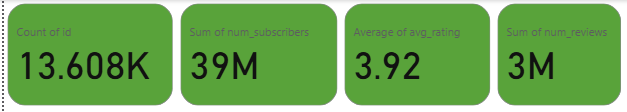
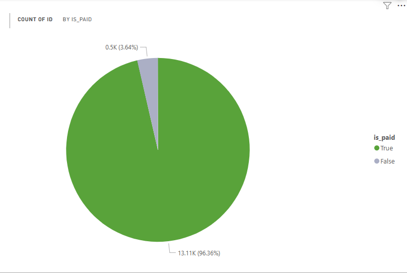
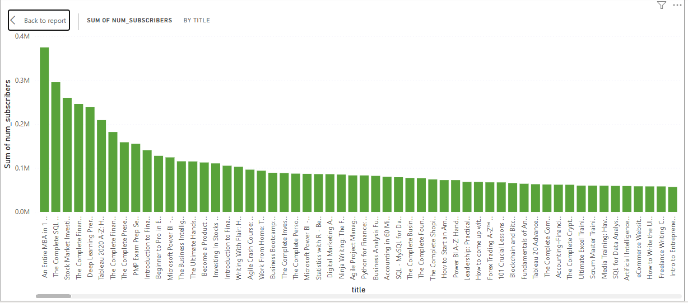
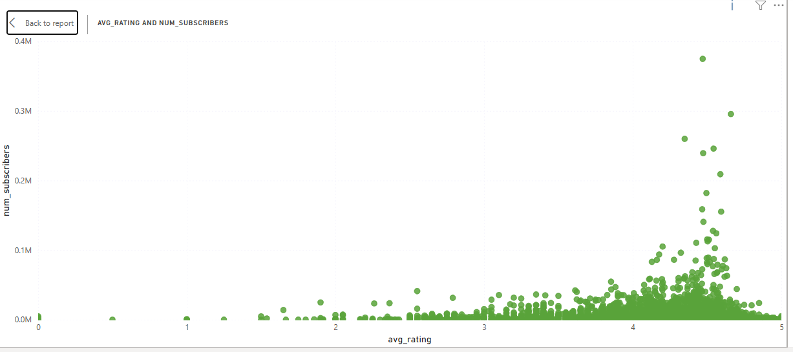
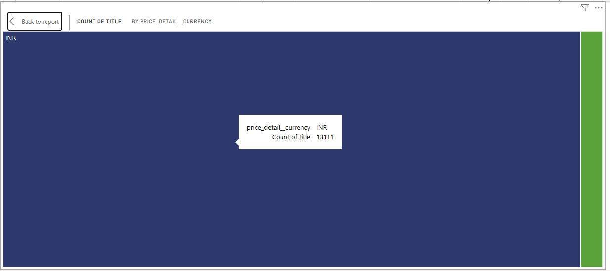
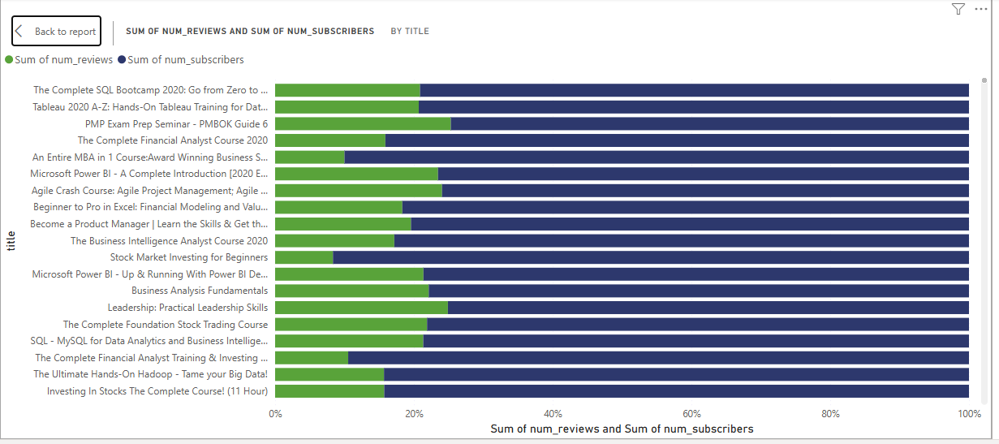
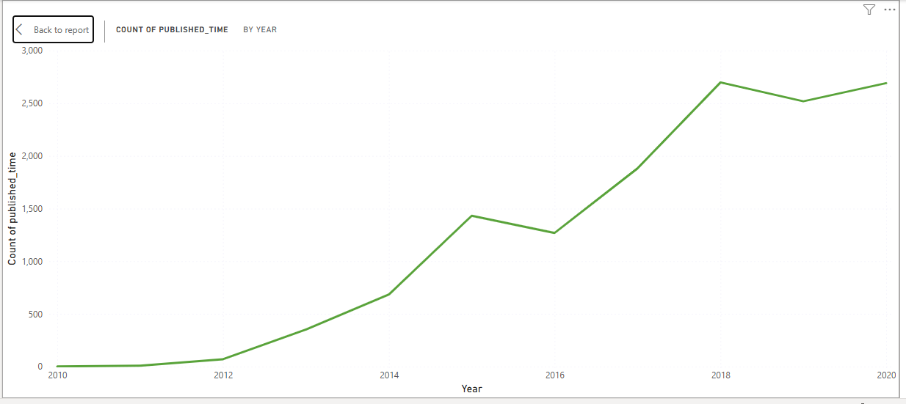
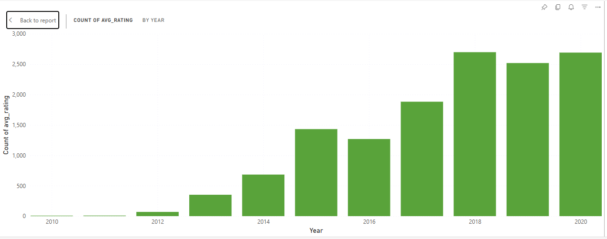

1. Udemy Finance & Accounting Dashboard
This webpage presents a visual dashboard created in Power BI summarizing Finance & Accounting course performance on Udemy, followed by detailed insights and interpretations for each visualization.
The dashboard provides a holistic view of Udemy’s Finance & Accounting courses, highlighting the total courses, subscribers, ratings, reviews, and trends over time.

1. Overall Performance Indicators
Udemy offers 13,608 Finance & Accounting courses, attracting over 39 million learners with an average course rating of 3.92 and a total of 3 million reviews. This indicates strong user engagement and a substantial market for online financial education.
2. Paid vs Free Courses
Over 96% of courses are paid, suggesting that learners perceive Finance & Accounting topics as valuable enough to invest in. This dominance of paid courses reflects high demand for premium content and credibility in this category.
3. Top Courses by Subscribers
The bar chart displays the most popular Finance and Accounting courses by number of subscribers. An Entire MBA in 1 Course leads with nearly 400,000 subscribers, followed closely by The Complete SQL Bootcamp 2020 and Stock Market Investing for Beginners. The pattern suggests that broad, career-oriented courses attract larger audiences than narrow or specialized topics.
4. Relationship between Ratings and Subscribers
There is a positive relationship between average rating and number of subscribers. Courses with higher ratings generally attract more learners, although a few highly subscribed courses have slightly lower ratings. This indicates that quality influences enrollment, but factors such as course topic relevance and marketing may also play significant roles.
5. Course Pricing by Currency
The majority of courses are priced in Indian Rupees (INR), suggesting that a significant portion of the Finance & Accounting learner base may originate from regions where this currency applies. This may reflect market concentration or affordability strategies targeted at emerging economies.
6. Reviews vs Subscribers
The combined bar chart comparing reviews and subscribers reveals that courses with more reviews also tend to have higher subscriber counts. This correlation implies that learner engagement and satisfaction often go hand in hand, as popular courses receive more feedback and interaction.
7. Average Rating by Year
The line chart depicts a steady increase in course publications from 2011 to 2020, with the most substantial growth between 2016 and 2019. This reflects the rising demand for online education, especially in professional finance training. The upward trend demonstrates consistent growth in Udemy’s finance content offerings over time.
8. Rating Trends Over Time
There is an upward trend in learner satisfaction from 2014 onwards. This suggests that course quality and instructional standards have improved over time, possibly as competition and platform quality control increased.